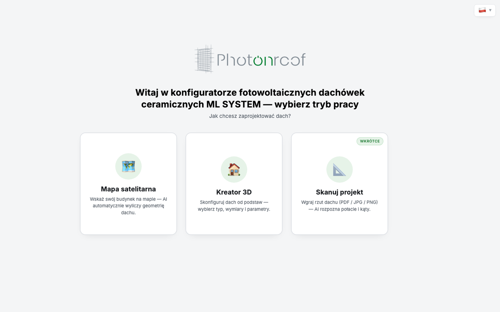
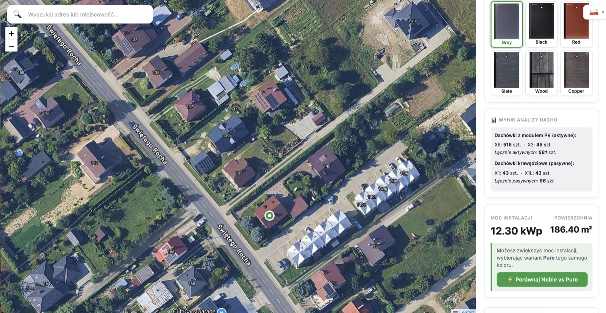
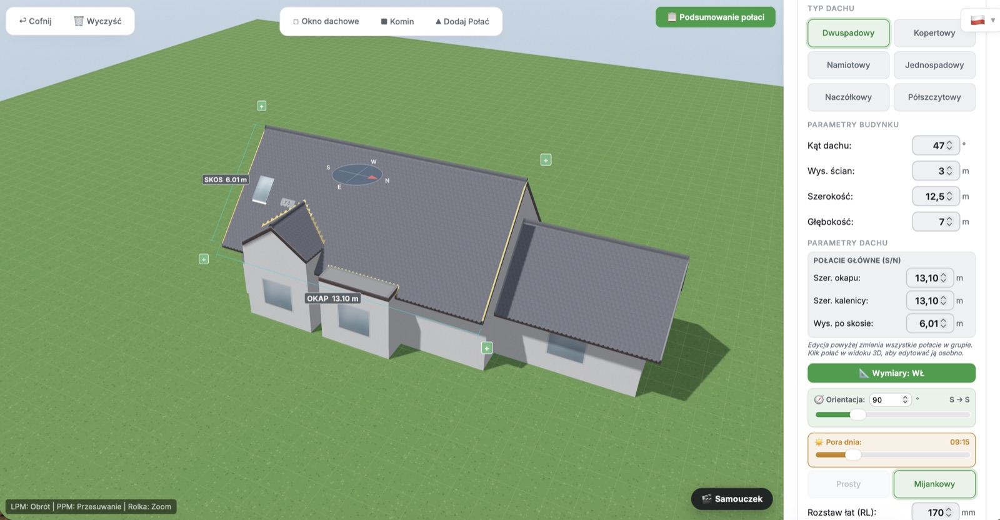
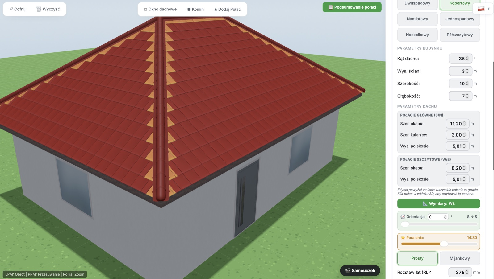
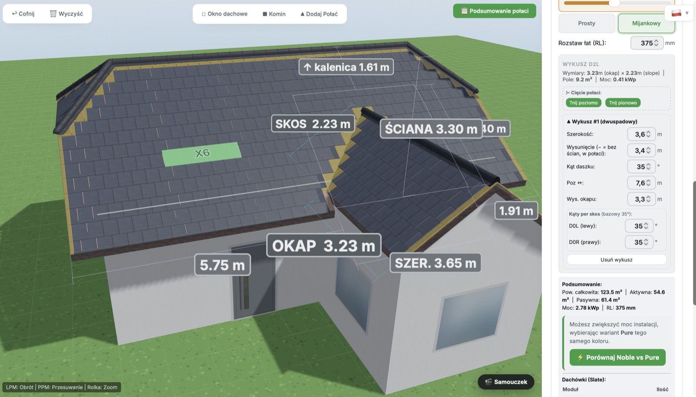
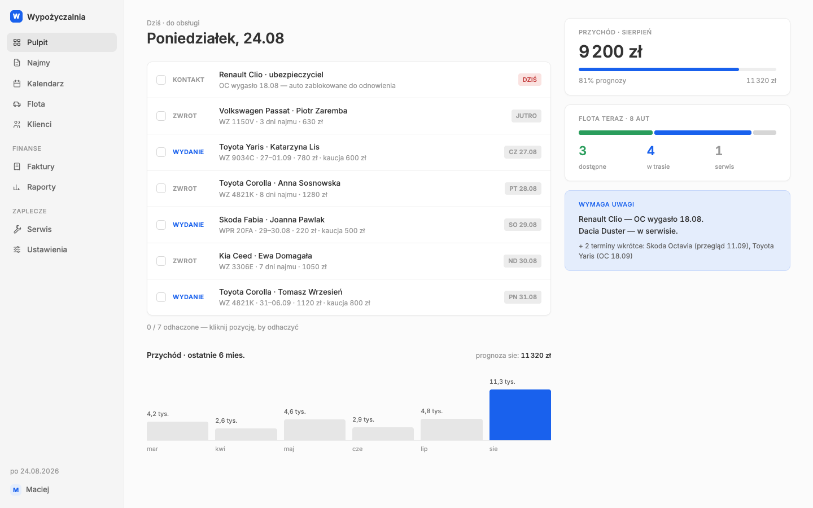
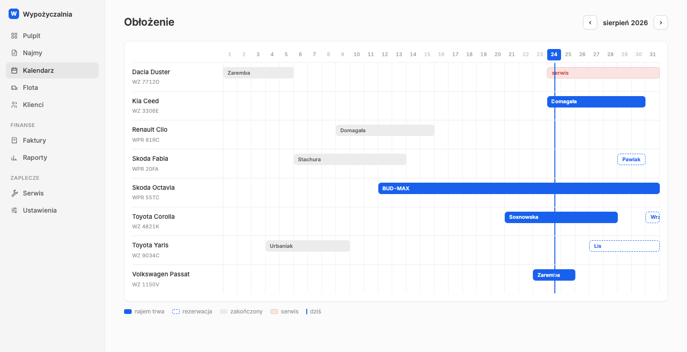
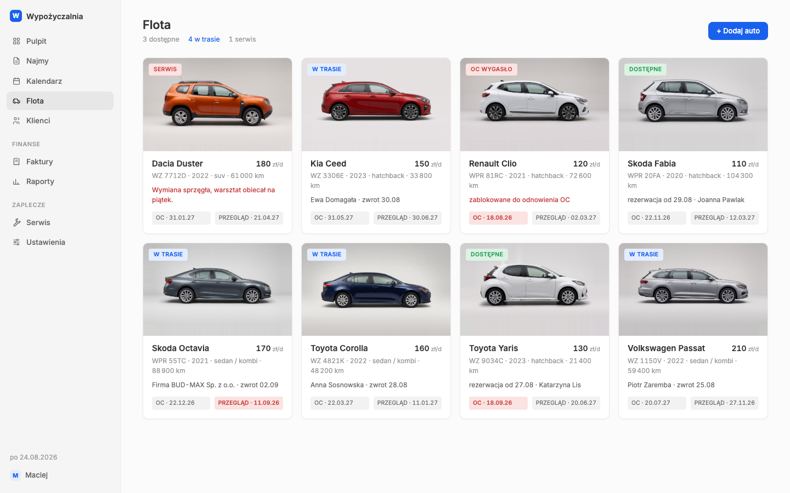
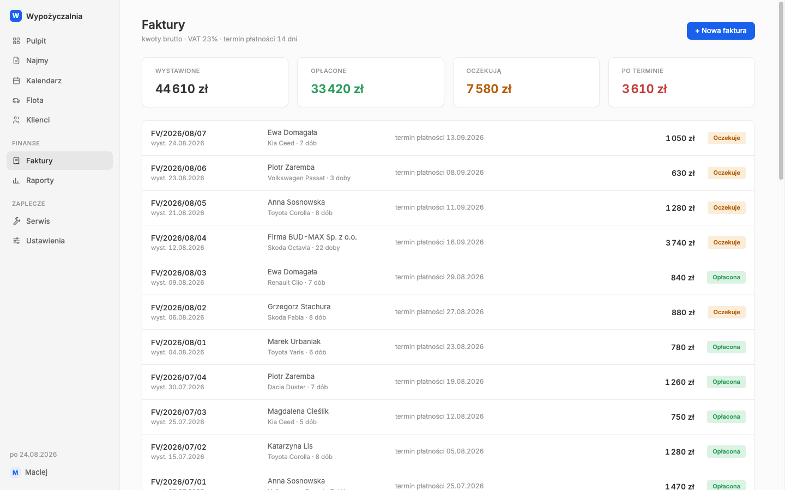

Realizacje
Krok trzeci: to, czego nie da się kupić z półki, bo gotowe programy zakładają, że każdy sklep pracuje tak samo. Twój nie.
Projekt na zamówienie
Konfigurator dla marki Photonroof, należącej do ML System — producenta szkła i dachówek fotowoltaicznych.
Klient sam projektuje dach, a system liczy powierzchnię, moc i liczbę dachówek.
System na miarę — pokaz możliwości
Kompletny panel do prowadzenia wypożyczalni: pulpit z zadaniami na dziś, kalendarz obłożenia aut, faktury, raporty i pilnowanie terminów OC i przeglądów.
Przykład systemu szytego pod jedną branżę — taki sam mogę zbudować pod Twoją.
Zobacz, jak wygląda w środku ↓
Narzędzie bezpłatne
Wpisujesz adres sklepu, a narzędzie sprawdza kilkaset podstron i pokazuje, czego brakuje: danych producenta wymaganych przez GPSR, numerów EAN, najniższych cen z 30 dni, martwych odnośników w mapie strony.
Wszystko widoczne z zewnątrz — bez logowania i bez dostępu do sklepu.
Działa — sprawdź swój sklep →
Produkt z abonamentem
Codzienne sprawdzanie, czy mosty między sklepem, magazynem i księgowością nadal działają — czy zamówienia schodzą, czy stany się aktualizują, czy faktury wychodzą do KSeF.
Jeśli coś przestaje działać, dostajesz jednego maila tego samego dnia.
Na zamówienie — zobacz, jak działa opieka miesięczna →
Studium przypadku
Dachówka fotowoltaiczna to produkt, którego nie da się wycenić z cennika. Cena zależy od kształtu dachu, kąta nachylenia, stron świata, zacienienia i tego, ile dachówek faktycznie wyprodukuje prąd, a ile jest tylko pokryciem.
Każde zapytanie oznaczało więc telefon do handlowca, ręczne liczenie w arkuszu i odpowiedź po kilku dniach. Klient, który chciał tylko wiedzieć „ile to mniej więcej kosztuje”, musiał czekać — a część nie czekała.
Przeniosłem całe liczenie do przeglądarki i dałem je klientowi do ręki. Aplikacja pozwala zaprojektować dach na trzy sposoby, a potem sama wylicza geometrię, moc i zapotrzebowanie na materiał.

Klient obrysowuje swój dach na zdjęciu satelitarnym. System sam wylicza powierzchnię, nachylenie połaci, ekspozycję względem słońca i moc możliwej instalacji — korzystając z wysokościowego modelu dachu.

Klient wybiera typ dachu — dwuspadowy, kopertowy, namiotowy, jednospadowy, naczółkowy albo półszczytowy — podaje wymiary budynku, kąt nachylenia i orientację względem stron świata. Model przebudowuje się na żywo, a na dachu od razu widać ułożone dachówki w wybranym kolorze.
Do tego dochodzą elementy, które w prawdziwym dachu psują każde wyliczenie: okna dachowe, kominy i dodatkowe skrzydła budynku. Suwak pory dnia pokazuje, jak w ciągu doby przesuwa się cień — bo to on decyduje, które połacie mają sens.
Model nanosi też wymiary i kąty, tak jak na rysunku technicznym, więc dekarz dostaje coś, co da się zabrać na budowę.


Aplikacja nie kończy się na ładnym obrazku. Dla każdej połaci osobno liczy powierzchnię, kąt, kierunek świata, moc w kilowatach, procent pokrycia i liczbę dachówek — z rozbiciem na aktywne, pasywne i docinki. Całość da się pobrać jako gotową ofertę PDF albo zapisać projekt i wrócić do niego później.

Wycena, która zajmowała kilka dni, powstaje w kilka minut i robi ją sam zainteresowany. Handlowiec przestaje liczyć, a zaczyna rozmawiać z kimś, kto już wie, czego chce.
Nazwa, logotyp i zrzuty ekranu wykorzystane za zgodą właściciela. Dane widoczne na zrzutach są przykładowe.
Pokaz możliwości
Gotowe programy do wypożyczalni zakładają, że każda firma pracuje tak samo — a potem właściciel i tak prowadzi połowę rzeczy w zeszycie, bo „w programie się nie da”. Ten panel zbudowałem jako przykład drogi odwrotnej: system uszyty pod jedną branżę, w którym na pierwszym ekranie jest dokładnie to, od czego zaczyna się dzień w wypożyczalni.

Serce systemu to kalendarz obłożenia: każdy wiersz to auto, każdy pasek to najem albo rezerwacja. System sam pilnuje, żeby nie dało się wynająć tego samego auta dwa razy w te same dni — i żeby auto z wygasłym OC nie wyjechało z placu.

Każde auto ma swoją kartę: zdjęcie, stawkę, przebieg, terminy OC i przeglądu oraz pełną historię najmów. Faktury wystawiają się same na podstawie najmów, więc kwoty zawsze zgadzają się z kalendarzem — a te po terminie od razu widać na czerwono.


To nie jest program na sprzedaż z półki — to pokaz tego, jak wygląda system zbudowany pod konkretny sposób pracy. Prowadzisz wypożyczalnię, serwis, produkcję na zamówienie albo cokolwiek, czego nie ogarnia żaden gotowy program? Taki panel mogę zbudować pod Twoją firmę — wycena po rozmowie, pozycja „System na zamówienie” w cenniku.
Projekt pokazowy. Wszystkie dane na zrzutach — nazwiska, telefony, numery rejestracyjne i kwoty — są wymyślone.